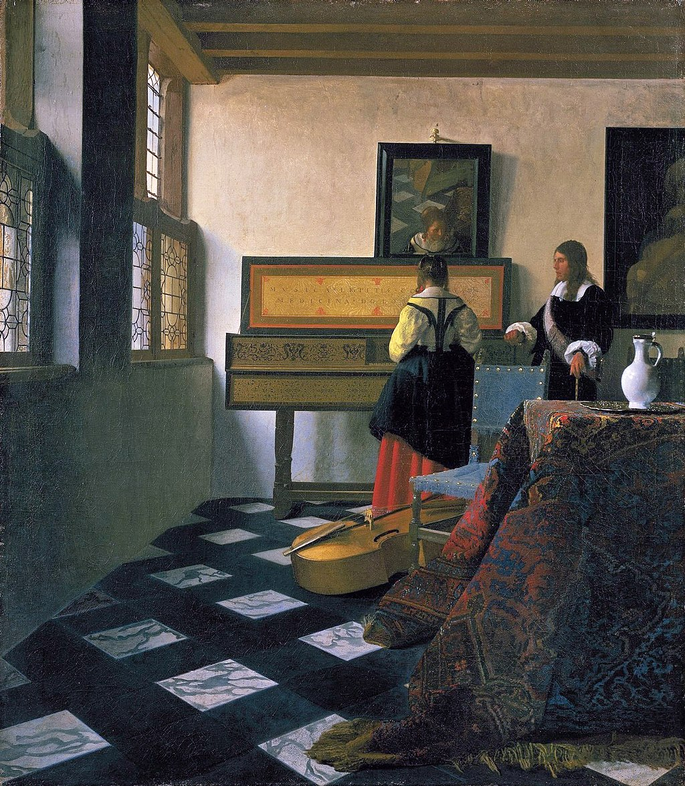

<head>
<meta charset="UTF-8" />
<meta name="keywords" content="drawing, painting" />
<meta name="description" content="drawings by Sunjy" />
<title>Sunjy</title>
<link rel="shortcut icon" type="image/x-icon" href="../../mImages/mCommon/favicon.ico" media="screen" />
<link rel="stylesheet" type="text/css" href="../../mCsses/mCommon/mCssA.css" />
<link rel="stylesheet" type="text/css" href="../../mCsses/mCommon/mCssB.css" />
<link rel="stylesheet" type="text/css" href="../../mCsses/mCommon/mCssC.css" />
<link rel="stylesheet" type="text/css" href="../../mCsses/mCommon/mCssD.css" />
<link rel="stylesheet" type="text/css" href="../../mCsses/mContent/mCssA.css" />
<link rel="stylesheet" type="text/css" href="../../mCsses/mContent/mCssB.css" />
<link rel="stylesheet" type="text/css" href="../../mCsses/mContent/mCssC.css" />
<link rel="stylesheet" type="text/css" href="../../mCsses/mContent/mCssD.css" />
</head>
<script type="text/javascript" src="../../mScripts/mContent/mContentAA.js" /></script>
<script type="text/javascript" src="../../mScripts/mContent/mContentAB.js" /></script>
<script type="text/javascript" src="../../mScripts/mContent/mContentAC.js" /></script>
<script type="text/javascript" src="../../mScripts/mContent/mContentAD.js" /></script>
<script type="text/javascript"></script> 
<script type="text/javascript">
document.write('<div class="mImgAbsolute"></div>');
/*
document.write('<p class="mFontSizeBColor" />From a white paper...</p>');
document.write('<table class="center"><tr><td>');
document.write('');
document.write('</td></tr></table>');
*/
</script>


<script type="text/javascript">
document.write('<p class="mFontSizeBColor" />Lady at the Virginal with a Gentleman</p>');
document.write('<p class="mFontSizeSColor" />“Lady at the Virginal with a Gentleman” or ‘The Music Lesson’ by Johannes Vermeer depicts a painting of a young female pupil during a music lesson with a gentleman.<br><br>Their relationship is no precise or clear from this painting. The composition uses perspective to draw the eye towards the figures who are in front of the virginal. <br><br>The virginal is a keyboard instrument of the harpsichord family and was popular in Europe during the late Renaissance and early Baroque period.<br><br>The composition is dominated by the covered table, the chair, and the bass violin the foreground. The light through the windows fills the room, casting soft, subtle shadows. <br><br>The composition includes a mirror on the wall where the blurred reflections have the young woman’s face, part of the table, and the legs of an artist’s easel. Adding to the mystery, the inscription on the lid of the virginal reads:<br><br>‘Music is a companion in pleasure and a balm in sorrow.’ <br></p>');
document.write('<table class="center" /><tr><td>');
document.write('<br>Their relationship is no precise or clear from this painting. The composition uses perspective to draw the eye towards the figures who are in front of the virginal. <br><br>The virginal is a keyboard instrument of the harpsichord family and was popular in Europe during the late Renaissance and early Baroque period.<br><br>The composition is dominated by the covered table, the chair, and the bass violin the foreground. The light through the windows fills the room, casting soft, subtle shadows. <br><br>The composition includes a mirror on the wall where the blurred reflections have the young woman’s face, part of the table, and the legs of an artist’s easel. Adding to the mystery, the inscription on the lid of the virginal reads:<br><br>‘Music is a companion in pleasure and a balm in sorrow.’ <br>" />');
document.write('</td></tr></table>');
</script>


